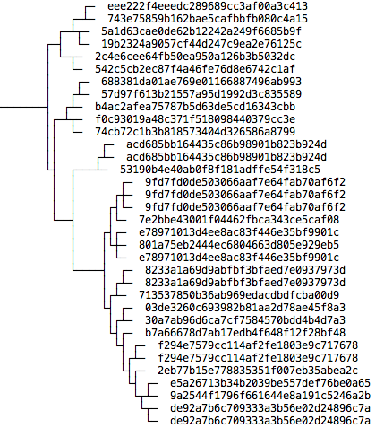
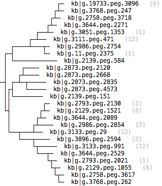
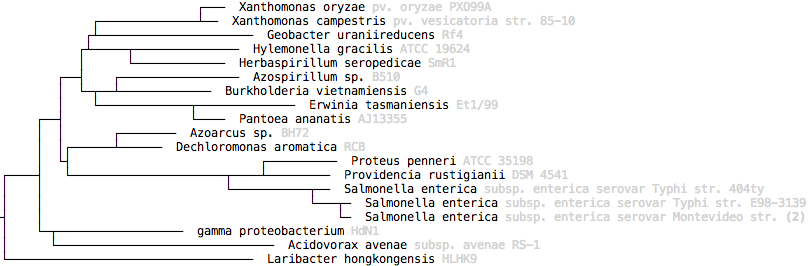

The Newick and FASTA representations are convenient for software programs to process, but they are of course difficult to read by eye. Because these are standard formats, you can use one of the numerous tree and alignment visualization tools publicly available to better display your tree. For simple displays, however, the Tree service provides a renderer which can diplay a tree or an alignment as an HTML file. To simply view the structure of a tree, pipe the output of the 'tree-get-tree' script to the 'tree-to-html' script, and save the output to an html file named 'myFirstTree.html'. Instead of kb|tree.991753, let's work with kb|tree.994594 which still includes our gene, but has fewer leaf nodes.
> tree-get-tree -p 'kb|tree.994594' | tree-to-html -raw > myFirstTree.html

The -raw option states that we want to visualize the tree in its raw form, without any additional automatically generated links or annotations. MD5s of course are difficult to read, so instead let's try to view the tree wth feature IDs.
The tree renderer requires that every leaf node is labeled so that it can be identified. Therefore it is safe practice to include a call to 'tree-remove-nodes', which by default will remove any leaf nodes that are unlabled. By doing this, we can view the same tree with feature IDs. In the command below, we retrieive a tree, replace all IDs with cannonical feature IDs, remove any nodes that didn't have an associated feature ID, and render the tree, all in one line!
> tree-get-tree -f 'kb|tree.994594' | tree-remove-nodes | tree-to-html > myFirstFeatureLabeledTree.html

Although simple, the 'tree-to-html' renderer has several flexible options which allow you to customize how the tree is diplayed. Let's work through a more complicated example to demonstrate how we can fetch a tree, retrieve more details about each node, and display a tree in a way that each leaf node links to a KBase Labs feature browser page.
First, fetch the tree with feature IDs, remove nodes that can't be mapped, and save it to a file.
> tree-get-tree -f 'kb|tree.994594' | tree-remove-nodes > my.tree
Next, get a list of all the leaf nodes, which will be a list of feature IDs, and save the list to a file.
> tree-get-leaf-nodes -i my.tree > feature.list
> head feature.list
kb|g.963.peg.3789
kb|g.1715.peg.3392
kb|g.3140.peg.4489
kb|g.1798.peg.766
kb|g.1292.peg.1057
kb|g.689.peg.4354
kb|g.2139.peg.920
kb|g.2139.peg.259
kb|g.2986.peg.2975
kb|g.11.peg.2150
OPTIONAL - The tree is fairly large, so for the purposes of this tutorial it will be easier/faster to work with a much smaller tree. This is easily accomplished. In the following steps, you can list how many features you have in the tree, create a removal list of most of the features using a command named 'shuf' to randomly select the removal list (in IRIS you can also use 'head' or 'tail'), remove those nodes, then get the reduced list of features again.
> cat feature.list | wc -l
4315
> mv my.tree my.tree.original
> shuf -n 4000 feature.list > feature.removal.list
> tree-remove-nodes -i my.tree.original -r feature.removal.list > my.tree
> cat my.tree | tree-get-leaf-nodes > feature.list
> cat feature.list | wc -l
315
Now that we have a list of features, we can use the CDMI scripts to get more information about each feature. For instance, we use the relationship IsOwnedBy, which maps features to genome data, to extract the scientific name of each genome that each feature came from.
> cat feature.list | get_relationship_IsOwnedBy --to scientific_name > feature.data
The results of this query are saved to a file named feature.data.
> head feature.data
kb|g.11.peg.2150 Bacillus amyloliquefaciens LL3
kb|g.3896.peg.2579 Bacillus amyloliquefaciens TA208
kb|g.3768.peg.651 Bacillus subtilis BSn5
kb|g.3110.peg.2751 Bacillus atrophaeus Detrick-1
kb|g.19732.peg.3387 Bacillus subtilis subsp. subtilis str. SMY
kb|g.2873.peg.2120 Bacillus sp. BT1B_CT2
kb|g.3644.peg.2089 Bacillus subtilis gtP20b
kb|g.3768.peg.411 Bacillus subtilis BSn5
kb|g.3565.peg.2755 Bacillus atrophaeus str. Dugway
kb|g.2130.peg.554 Bacillus subtilis subsp. subtilis str. JH642
We can then use a Tree service command to construct URLs to all the feature pages.
> cat feature.list | tree-create-url-map -u 'http://140.221.92.12/feature_info/feature.html?id=' > feature.links
> head feature.links
kb|g.11.peg.2150 http://140.221.92.12/feature_info/feature.html?id=kb|g.11.peg.2150
kb|g.3896.peg.2579 http://140.221.92.12/feature_info/feature.html?id=kb|g.3896.peg.2579
kb|g.3768.peg.651 http://140.221.92.12/feature_info/feature.html?id=kb|g.3768.peg.651
kb|g.3110.peg.2751 http://140.221.92.12/feature_info/feature.html?id=kb|g.3110.peg.2751
kb|g.19732.peg.3387 http://140.221.92.12/feature_info/feature.html?id=kb|g.19732.peg.3387
kb|g.2873.peg.2120 http://140.221.92.12/feature_info/feature.html?id=kb|g.2873.peg.2120
kb|g.3644.peg.2089 http://140.221.92.12/feature_info/feature.html?id=kb|g.3644.peg.2089
kb|g.3768.peg.411 http://140.221.92.12/feature_info/feature.html?id=kb|g.3768.peg.411
kb|g.3565.peg.2755 http://140.221.92.12/feature_info/feature.html?id=kb|g.3565.peg.2755
kb|g.2130.peg.554 http://140.221.92.12/feature_info/feature.html?id=kb|g.2130.peg.554
Finally, we can render the tree.
cat my.tree | tree-to-html -a feature.data -l feature.links > niceTreeWithLinks.html
